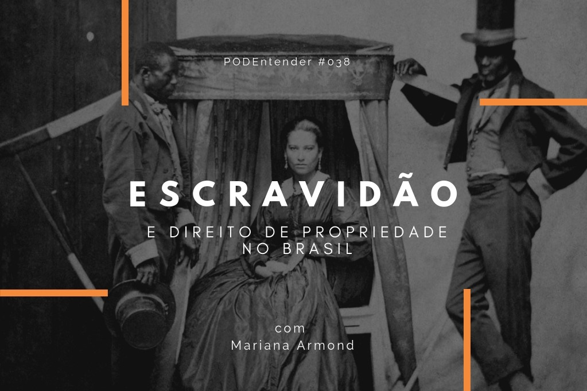

PODEntender #038 sobre escravidão e direito de propriedade no Brasil
| em Entrevistas Podcast: Reproduzir em uma nova janela | Baixar
A noção de que pessoas não podem ser objeto de propriedade é relativamente recente na história da humanidade.
A escravidão foi, por muito tempo, a base da economia brasileira. Havia permissão legal para que brancos fossem donos de pretos. Mas pouco se sabe sobre a estrutura jurídica dava suporte a este direito.
Quais direitos tinha um escravo?
Como um escravo poderia comprovar seu status de liberdade?
Tais perguntas são esclarecidas pelo trabalho da pesquisadora Mariana Armond Dias Paes e detalhadas neste episódio do PODEntender.
Junte-se a Tonho (Antonio Marinho), Carol Lacerda (10° dan do Kumon) e Katarina Holanda em uma conversa com Mariana Armond Dias Paes, graduada (UFMG), mestre (USP) e doutora em Direito (USP e Max-Planck-Institut für europäische Rechtsgeschichte, em Frankfurt).